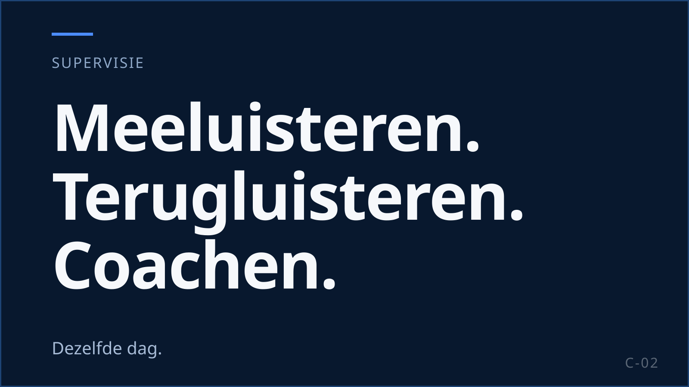
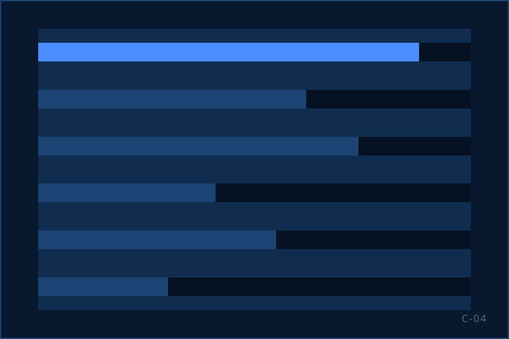

Van briefing tot draaiende salesoperatie
Een campagne begint niet met bellen. Hij begint met een briefing, een bestandscheck en een team dat nog geworven moet worden. Hieronder de zes stappen van briefing naar een operatie die draait en kan groeien. Per stap: wat wij doen en wat u krijgt.

Stap 1. Briefing en bestandscheck
In de briefing leggen wij vast wat de campagne moet opleveren en waarop wij mogen bellen. Hier beoordelen wij ook of de campagne bij KISS past: een herkenbaar merk, structureel volume en ruimte voor kwaliteit. Niet iedere campagne past bij KISS. En KISS past niet bij iedere campagne. Dat zeggen we hier, niet na drie maanden.
| Wat wij doen | Wat u aanlevert | Wat u krijgt |
|---|---|---|
| Script opzetten of bewerken en toetsen aan art. 6:230v BW en de Code Telemarketing | Propositie, aanbod, doelgroep, grenzen van het aanbod | Een script en gespreksopening die de wet en uw merk respecteren |
| Bestandscheck: per record aantoonbare toestemming of geldige klantrelatie; ontdubbeld tegen uw opt-out-lijst | Bestanden met bron en datum van toestemming; uw opt-out-lijst | Een belbaar bestand en een overzicht van wat is afgevallen en waarom |
| KPI-afspraken: resultaat per uur, kwaliteitsscore, houdbaarheid na bevestiging | Uw targets en uw definitie van een goede verkoop | Een meetplan dat u en wij hetzelfde lezen |
| Verwerkersovereenkomst: doel, instructies, subverwerkers, beveiliging, datalekmelding, audits, verwijdering | Uw modelovereenkomst of de onze | Een getekende verwerkersovereenkomst vóór de eerste call |
Stap 2. Recruitment en selectie
KISS werft zijn agents zelf, vanuit Rijswijk. Geen uitzendbureau, geen flexpool: onze eigen recruitment zoekt, belt, ontvangt en selecteert. Wij selecteren op luisteren, veerkracht en het vermogen een propositie uit te leggen in plaats van voor te lezen. De arbeidsmarkt van Den Haag, Delft en Rijswijk ligt voor de deur: tram en bus stoppen bij het pand.
Bemensing is daardoor een proces, geen belofte. Bij de start werven wij de eerste groep; bij groei loopt de werving van de volgende groep door terwijl het team draait.
- medewerkers, circa
- 100
- agents per supervisor, maximaal
- 15
- sinds, in Rijswijk, met eigen recruitment
- 2014
Wat u krijgt: een team van medewerkers van KISS, geselecteerd voor uw campagne, met een supervisor die vanaf dag één bekend is.
Stap 3. Trainingsgroep: vijf dagen vóór het eerste gesprek
Iedere agent doorloopt vijf dagen training voordat hij of zij uw eerste klant spreekt. Aan het einde wordt getoetst op wetgeving en script; wie de toets niet haalt, gaat niet live.
Onderdelen van de vijf dagen:
Propositie, doelgroep en merk van de opdrachtgever
Wetgeving en gespreksopening: identiteit, opdrachtgever, doel, recht van verzet
Script, aanbod en bezwaren
Oefengesprekken met terugluisteren en feedback
Toets op wetgeving en script; training gedocumenteerd
Wat u krijgt: agents die uw propositie kunnen uitleggen en de regels kennen, en een gedocumenteerde training die u bij een audit kunt overleggen. Wilt u zelf een dagdeel over uw merk verzorgen? Dat kan, en het werkt.
Stap 4. Pilot: live met supervisie en QA-kalibratie
De eerste groep gaat live als pilot. Niet om te kijken of het werkt, maar om te kalibreren wat het meest oplevert: welke opening, welk aanbod, welk tempo. Gesprekken worden beoordeeld op een vaste set criteria; script en aanpak worden aangepast op wat we horen. Aanpassingen gaan altijd langs u.
Eén supervisor op 10 tot 15 agents
De supervisor zit bij zijn team, luistert mee en terug, en coacht dezelfde dag.
Gespreksanalyse
Opening, aanbod, bezwaren en afsluiting worden per gesprek gescoord. De scores gaan naar training en script, niet alleen naar een rapport.
Dagelijkse coaching
Kort: één teruggeluisterd gesprek, één verbeterpunt, de volgende dag opnieuw luisteren.
Wat u krijgt: de eerste resultaten met uitleg, een gekalibreerd script en een besluit over opschalen op basis van wat er echt gebeurt. Duur van de pilot: CIJFER — intern valideren.
Stap 5. Sturen op data en rapportage
Data is geen rapport. Het is input voor het volgende betere gesprek. Onze eigen IT & development bouwt de rapportages en richt de gegevensuitwisseling met uw systeem in. U ziet per agent, per bestand en per script wat het oplevert: bereik, conversie, kwaliteitsscore, houdbaarheid na bevestiging, opt-outs en opzegredenen.
De review met u vindt plaats op een vaste frequentie die we per campagne afspreken. Daarin bespreken we wat we met de cijfers doen: welk bestand meer aandacht verdient, welk aanbod niet werkt, welke agent extra coaching krijgt.
Wat u krijgt: bruikbare rapportage, uitkomsten per record terug in uw CRM, en een gesprekspartner die de cijfers kan uitleggen.

Stap 6. Opschalen zonder controle te verliezen
Opschalen is bij KISS geen groter team, maar meer teams. Ieder blok van 10 tot 15 agents krijgt een eigen supervisor, doorloopt dezelfde vijf dagen training en wordt op dezelfde criteria beoordeeld. Zo blijft de kwaliteit van blok tien gelijk aan die van blok één.
Wat opschalen van u vraagt: een forecast, tijdig nieuwe bestanden en een besluit op basis van de pilotcijfers. Wat het van ons vraagt: recruitment die doorloopt, een trainingsruimte die niet leeg staat en supervisors die klaarstaan voordat het blok start.
| Criterium | Opschalen bij een traditioneel callcenter (vaak) | Opschalen bij KISS |
|---|---|---|
| Wie werft | Uitzendbureau of flexpool, op aanvraag | Eigen recruitment, doorlopend |
| Hoe het team groeit | Bestaande groep wordt groter | Nieuw blok van 10 tot 15 met eigen supervisor |
| Training van nieuwe agents | Korte instructie op de vloer | Vijf dagen, zelfde programma, zelfde toets |
| Hoe kwaliteit wordt vastgehouden | Achteraf gemeten | Zelfde gespreksanalyse en coaching per blok, vanaf dag één |
Hoe dat er in de praktijk uitziet · Waar opschalingen misgaan en hoe u het meet
Welke regels sinds 1 juli 2026 gelden voor telefonische sales leest u in Telemarketing sinds 1 juli 2026: wat mag nog, en voor wie?; meer achtergrond staat in Kennis.
Wat u van ons mag verwachten
| Onderwerp | Afspraak |
|---|---|
| Rapportage | Per agent, bestand en script, uit eigen IT & development; uitkomsten per record terug naar uw systeem. |
| Review | Op een vaste frequentie die we per campagne afspreken, met conclusies en acties. |
| Opt-outs | Elk verzoek om niet meer gebeld te worden verwerken wij direct; het record gaat terug naar u binnen de termijn uit de verwerkersovereenkomst. |
| Klachten | Klachtenprocedure met vaste doorlooptijd en terugkoppeling aan u: CIJFER — intern valideren. |
| Auditrecht | U mag onze uitvoering auditen; dat staat in de verwerkersovereenkomst. |
| Informatiebeveiliging | ISO 27001-gecertificeerd sinds 2022: toegangsbeheer, incidentproces, jaarlijkse externe audit; datalekken gemeld binnen de afgesproken termijn. |
De volledige checklist van twintig punten · Wie de vloer aanstuurt
Zo werkte het bij anderen
-
Geanonimiseerd
Landelijke loterij
Deelnemerswerving op volume, in blokken van 10 tot 15.
Lees de case
-
Geanonimiseerd
Grote uitgever
Werving, upgrade en behoud vanaf één vloer.
Lees de case
-
Geanonimiseerd
Goed doel
Donateurswerving binnen de Code Telemarketing en de 3-jaarstermijn.
Lees de case
Bespreek uw salesvraag.
Vertel ons welk volume, welke doelgroep en welk resultaat u zoekt. Wij vertellen u eerlijk of en hoe KISS dat kan organiseren, en wanneer een eerste groep kan starten.